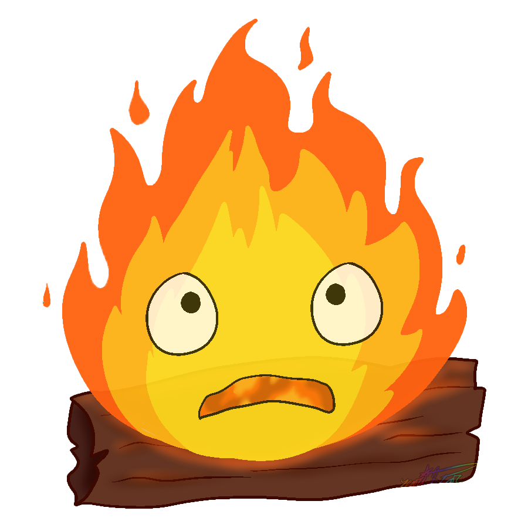

kiki la petite sorcière
"Kiki la Petite Sorcière" (Kiki's Delivery Service) est un film d'animation japonais réalisé par Hayao Miyazaki et produit par le Studio Ghibli. Résumé : L'histoire suit une jeune sorcière de 13 ans nommée Kiki qui, conformément à la tradition des sorcières, part de chez elle pour vivre seule pendant un an. Accompagnée de son chat noir parlant, Jiji, Kiki s'installe dans une ville côtière et ouvre un service de livraison en utilisant son balai volant. Au fil de son séjour, elle fait des amis, rencontre des défis, et apprend des leçons importantes sur l'indépendance, la confiance en soi et la persévérance. Anecdotes : Inspiration du roman : Le film est basé sur le livre pour enfants "Kiki la Petite Sorcière" écrit par Eiko Kadono. Le roman a remporté le prix littéraire pour enfants le plus prestigieux au Japon, le Prix littéraire pour enfants Yomiuri. Personnalité de Kiki : Miyazaki a délibérément créé le personnage de Kiki avec une personnalité résolue et indépendante. Il a voulu montrer une héroïne qui trouve sa propre voie et gagne en maturité tout en restant fidèle à elle-même. Création de l'univers : Le film présente un monde charmant et nostalgique qui combine des éléments européens et japonais. L'équipe de production a visité des villes européennes pour s'inspirer de l'architecture et de l'atmosphère. Studio Ghibli et les vols : Les studios Ghibli sont situés à Mitaka, une banlieue de Tokyo, où l'équipe a observé les avions décollant et atterrissant à l'aéroport de Tokyo-Haneda. Cette observation a influencé la scène où Kiki décolle pour la première fois sur son balai volant. Doublage : Kiki est doublée par Minami Takayama en japonais. Dans la version anglaise, elle est doublée par Kirsten Dunst. Le doublage anglais a été réalisé par l'adaptateur John Semper, qui a également travaillé sur plusieurs séries animées populaires. Hommage à l'aviation : Miyazaki a une passion pour l'aviation, qui est souvent reflétée dans ses films. "Kiki la Petite Sorcière" montre cette passion à travers l'utilisation du balai volant de Kiki. Thème de l'indépendance : Le film transmet un message positif sur l'indépendance et la découverte de soi. Kiki apprend à surmonter les défis et à croire en ses propres capacités. "Kiki la Petite Sorcière" est un film qui célèbre l'émancipation, l'amitié et la découverte de soi. Avec son ambiance chaleureuse et ses thèmes universels, il a captivé les audiences de tous âges depuis sa sortie en 1989.
